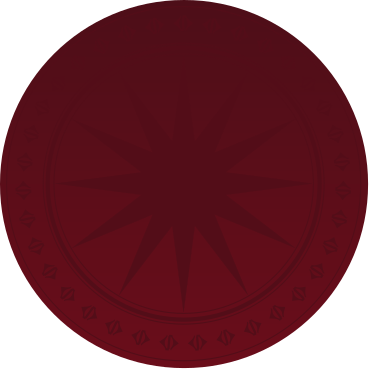
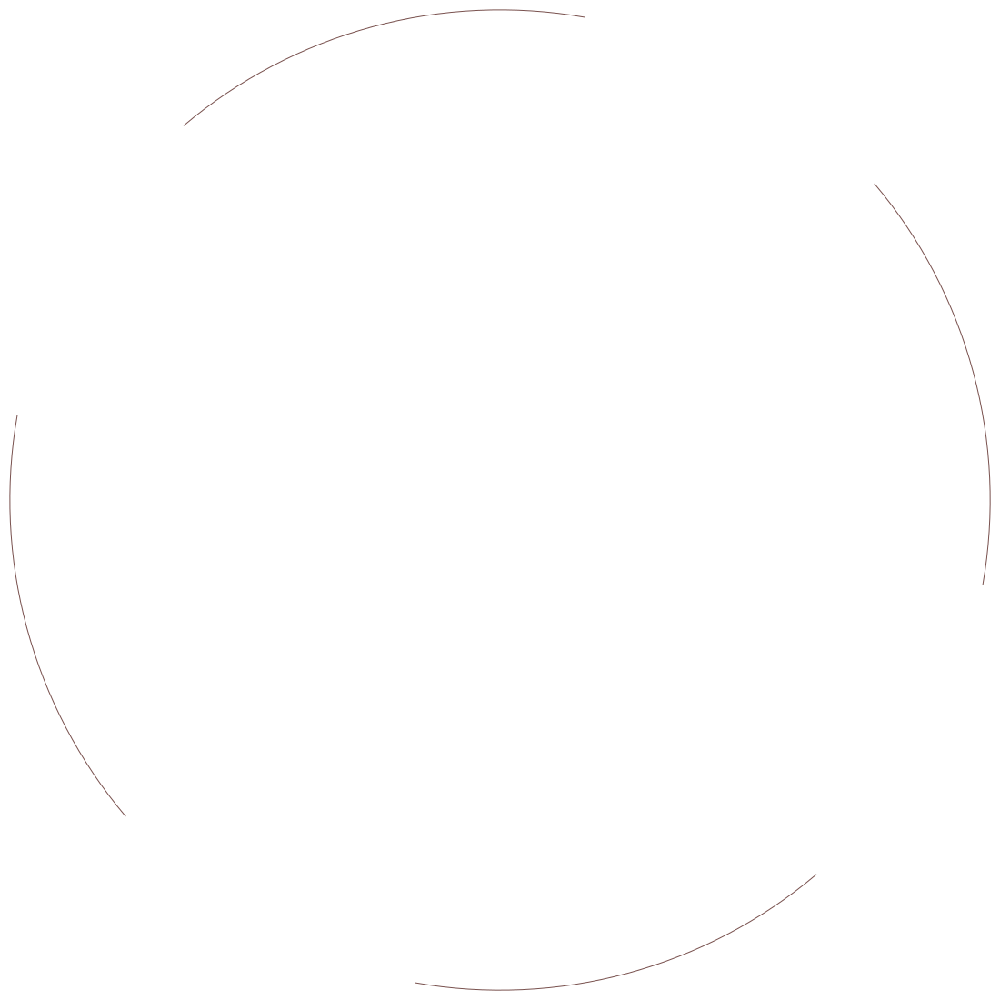
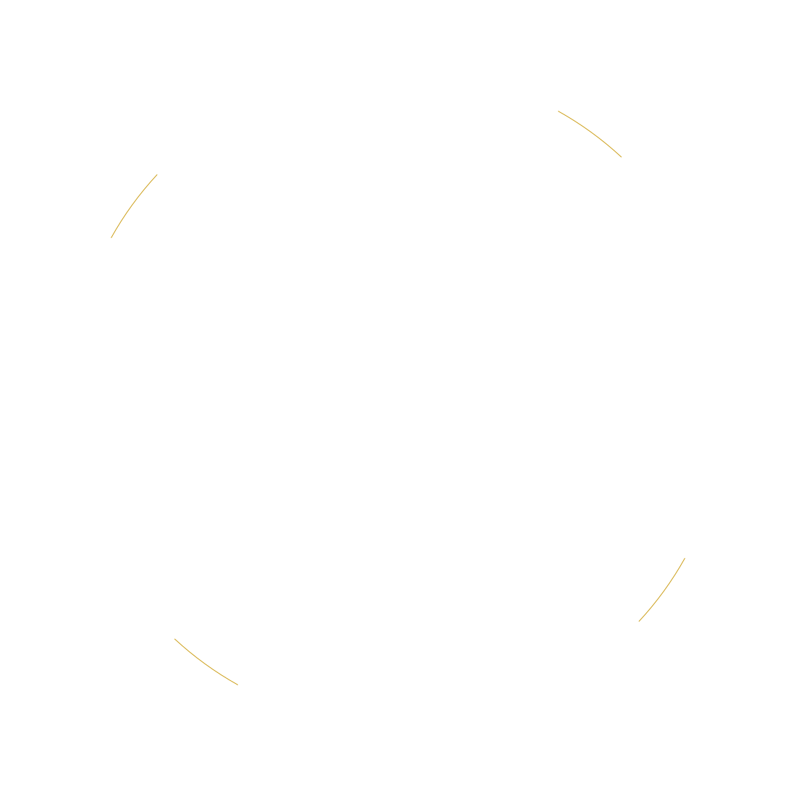
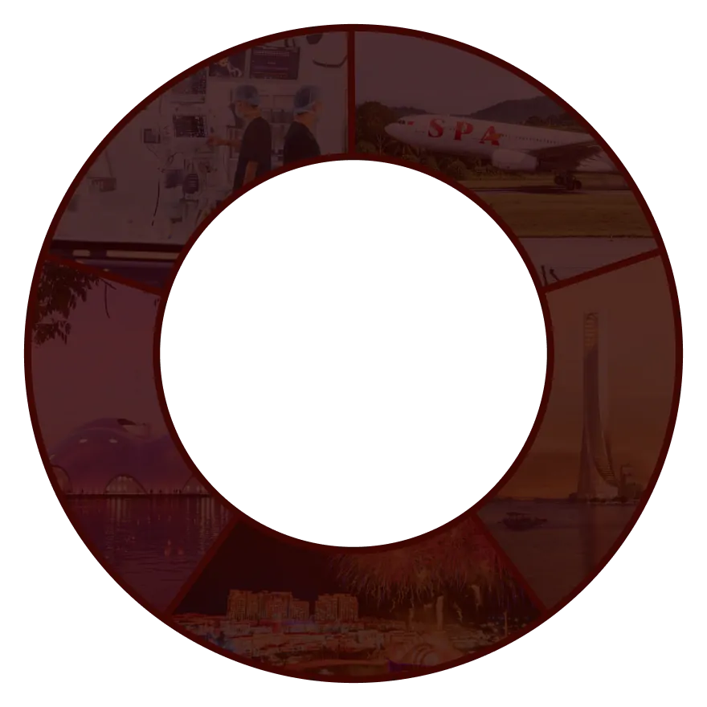
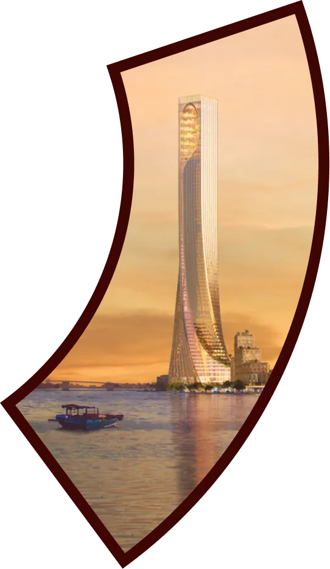
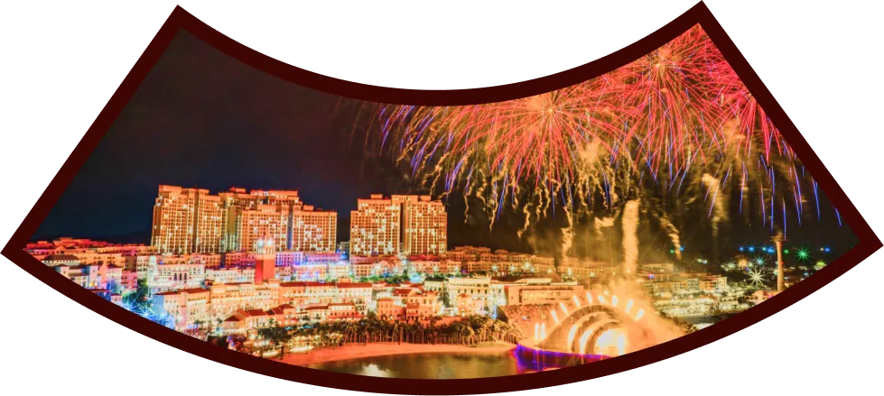
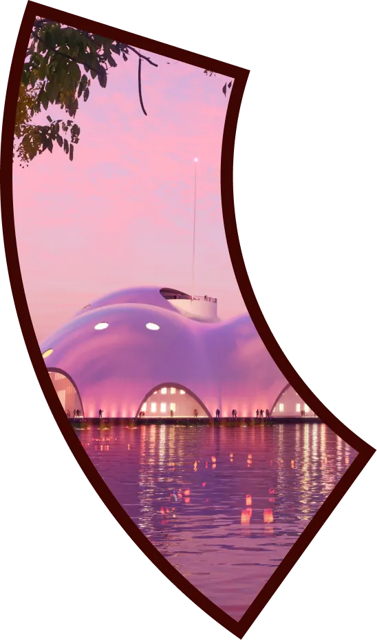
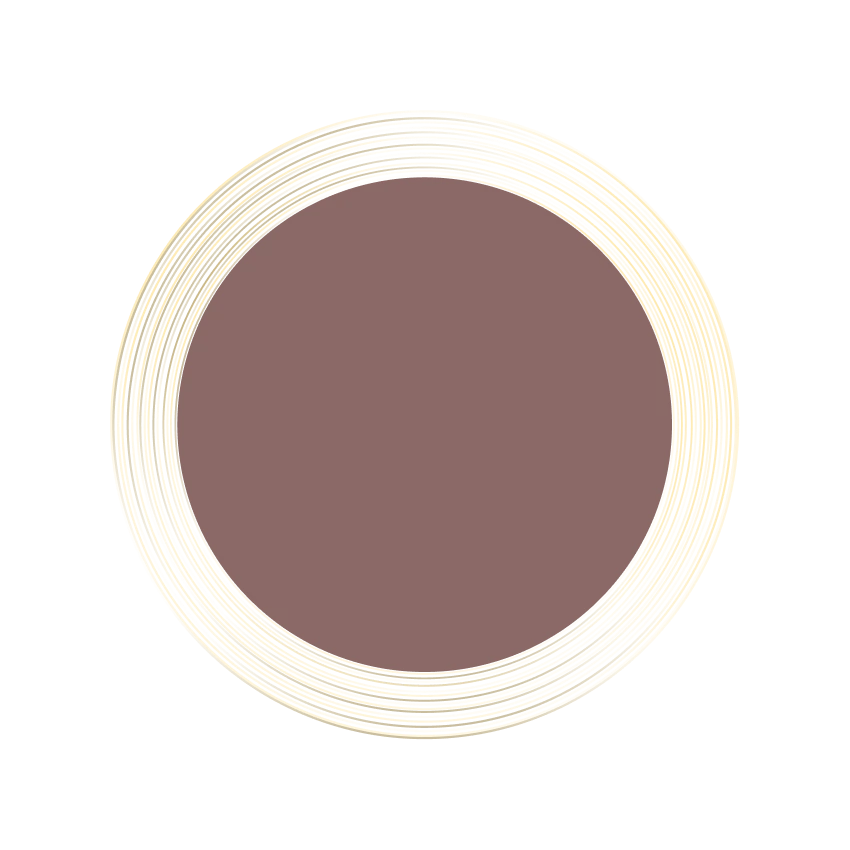
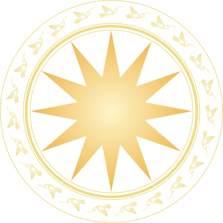
Du lịch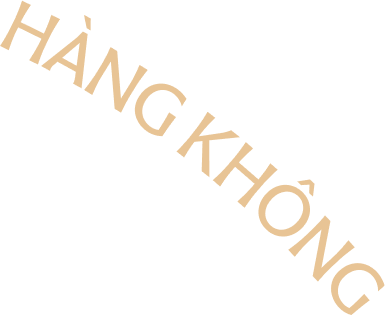
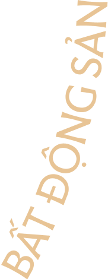
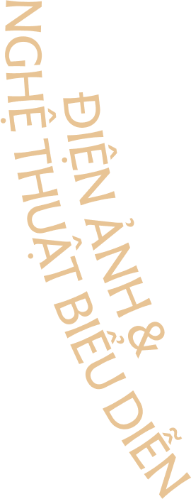
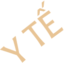
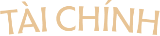
05 lĩnh vực chủ chốt
02 nền tảng vững vàng
Hàng không
Du lịch là lĩnh vực mũi nhọn, giữ vai trò dẫn dắt toàn bộ hệ sinh thái Sun Group. Từ chiến lược thương hiệu đến từng trải nghiệm liền mạch, mọi kết nối đều hướng tới mục tiêu gia tăng sức hấp dẫn và giá trị cho mỗi điểm đến, góp phần nâng tầm du lịch Việt Nam.